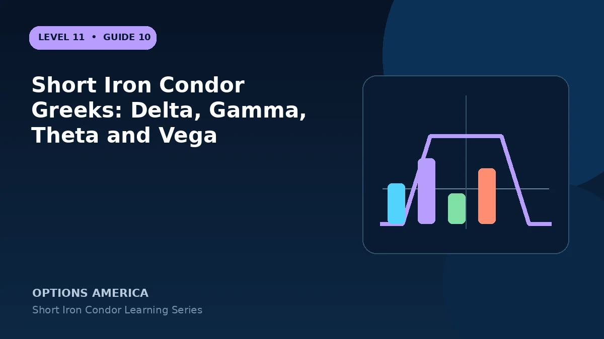

Understand how four option legs combine into the net Greeks of a short iron condor and how those exposures change near each boundary.
Delta
Call-side and put-side delta may offset near entry. As price approaches the short call, net delta becomes increasingly negative; toward the short put, it becomes increasingly positive, resisting the move and creating losses.
Gamma
Short options usually dominate the long wings, leaving negative gamma through much of the central range. Delta therefore changes unfavorably during large moves, especially close to expiration.
Theta and vega
The position commonly earns positive theta and carries negative vega. Long wings reduce both exposures, and their net values vary with price, time, skew and unequal strike placement.
Portfolio scaling
Add signed Greeks across all legs, multiply by contract quantity and multiplier, and beta-weight when appropriate. Entry neutrality does not remain fixed, so test up, down and volatility scenarios.
A practical example
A centered condor begins at delta −0.02, theta +0.11 and vega −0.18 per share. Ten contracts scale those theoretical sensitivities dramatically and require stress testing.
This simplified example focuses on one position and a limited set of price and volatility outcomes. Live option prices also reflect the underlying price, time decay, rates, dividends, liquidity and transaction costs. Greeks are theoretical estimates, not guarantees.
Frequently asked questions
Is delta exactly zero?
Rarely, and it changes continuously.
Why is gamma negative?
The short inner options often dominate the long wings.
Does positive theta guarantee profit?
No. Delta, gamma and vega losses can be larger.
Continue the Short Iron Condor cluster
Explore related guides: Theta and Time Decay in a Short Iron Condor · Short Iron Condor: 12 Mistakes to Avoid · How to Choose Short Iron Condor Strikes. For a structured sequence, use the free Level 11 – Short Iron Condor course.
Options involve risk and are not suitable for every investor. This material is educational and is not investment, tax or legal advice. Greeks are theoretical estimates, and contract terms and broker requirements can vary.